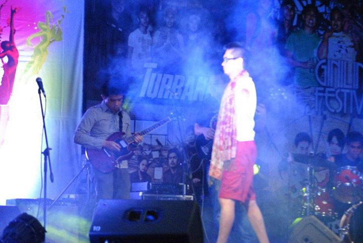

MEMBERS
DESCRIPTION
Turband is a five piece band formed back in 2011 at Colegio de San Juan de Letran. What started out as a trip project by vocalist Jethro Adriano and bassist Christian Jacinto, the band began to grow when they won the 2011 battle of the bands at their College. Backed by Alwyn Santos and Paulo Gozon on guitars and Cyrus Blanco on drums, Turband would then become a regular at gigs at the Colegio while also doing projects on the side.
The band’s sound could be described as unconventional as all five members come from different backgrounds in music and different bands. The vocalist, Adriano, started out as an RnB and Soul singer, while guitarists Santos and Gozon come from deep rock roots. Bassist Jacinto hails from a jazz and blues background while Blanco, on drums, sides more on gospel. When the sounds and background converge, the result is a heavy, in your face, aggressive type of rock but with a relaxing touch of soul and jazz.
INFO
|  | |||
 |